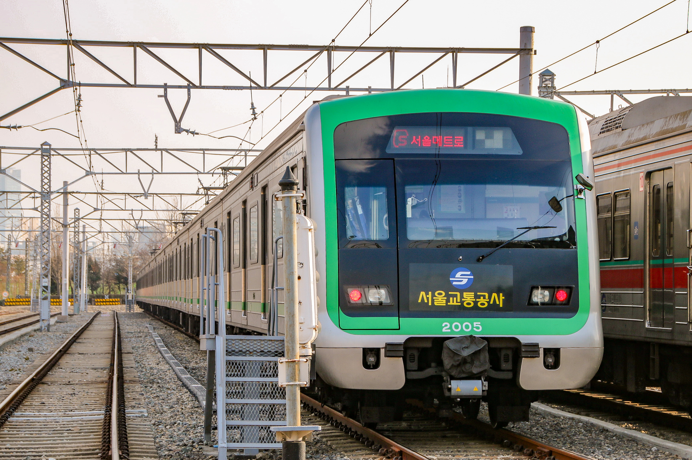
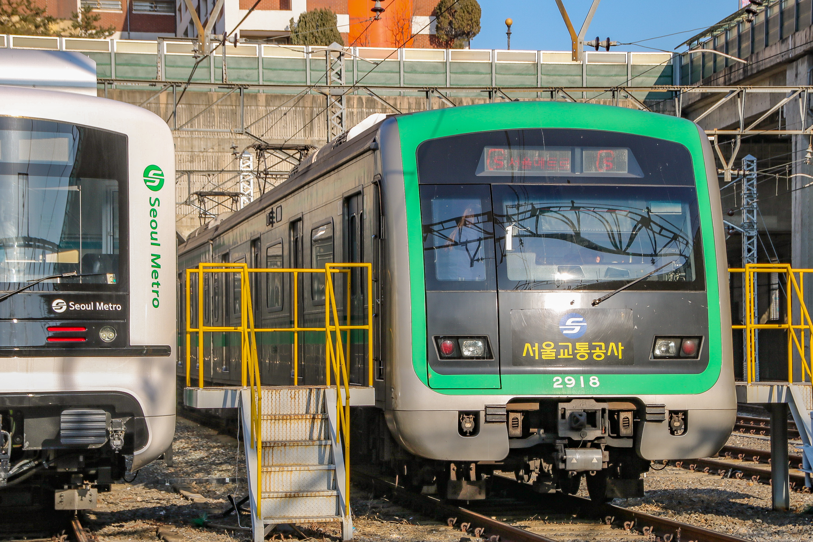
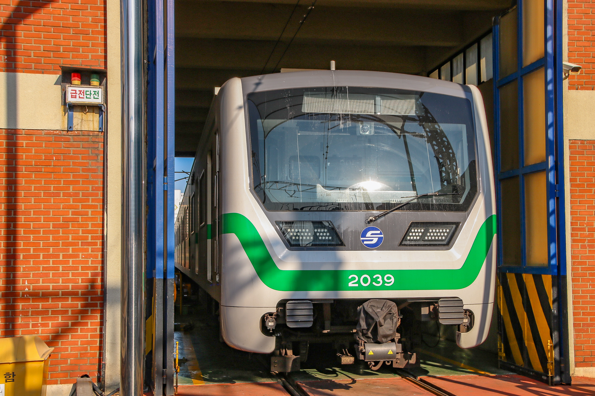
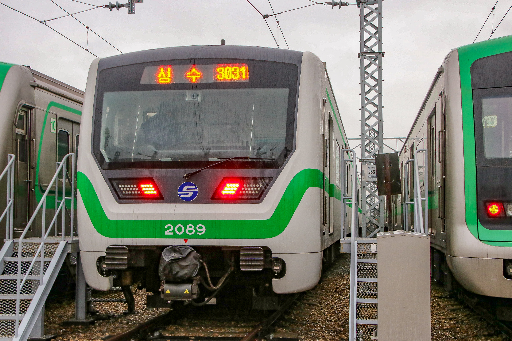
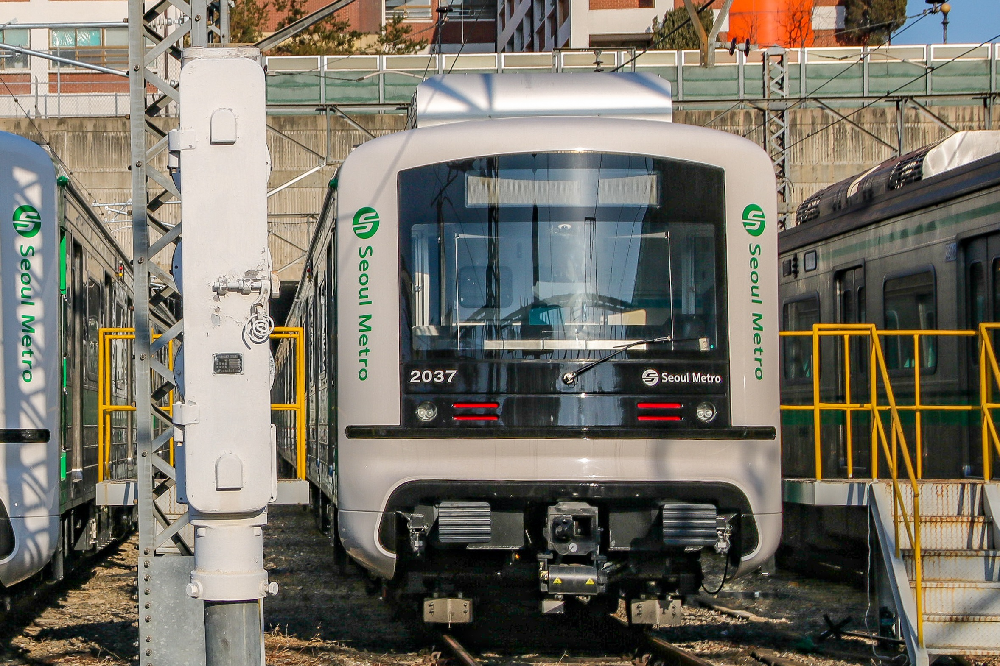

| 제어 방식 | VVVF | |
| 구둥 방식 | 전기 동력분산식 | |
| 편성 | 10량 1편성, 4량 1편성 | |
| 도입 시기 | 2005년 | |
| 제작사 | 로템 | |
| 소유자 | 서울교통공사 | |
| 소속 기지 | 신정차량사업소, 군자차량사업소 | |
| 차호 | 201~205편성, 257편성 | |
|

205편성 |
||
본선용 201~205, 성수지선용 257편성 재적. 1980년산 저항제어 차량을 대체할 목적으로 도입되었다. 이 차량은 측면의 검은색 부분이 큰 특징이며, 유일하게 도입 당시부터 스테인리스 의자를 적용한 차량이다. 추진제어장치는 미쓰비시 VVVF - IPM IGBT
| 제어 방식 | VVVF | |
| 구둥 방식 | 전기 동력분산식 | |
| 편성 | 10량 1편성, 4량 1편성 | |
| 도입 시기 | 2007~2008년 | |
| 제작사 | 현대로템 | |
| 소유자 | 서울교통공사 | |
| 소속 기지 | 신정차량사업소, 군자차량사업소 | |
| 차호 | 215~231편성, 258~272편성 | |
|

218편성 |
||
본선용 215~231, 261~272, 성수지선용 258~260편성 재적. 220, 221편성은 임시로 신정지선에서 운행중. 1982년산 저항, 쵸퍼제어 차량을 대체할 목적으로 도입되었으며, 1차분과는 다른 점이 출입문 구동방식, 의자, 측면 도색 등이다. 추진제어장치는 미쓰비시 VVVF - IPM IGBT
| 제어 방식 | VVVF | |
| 구둥 방식 | 전기 동력분산식 | |
| 편성 | 10량 1편성 | |
| 도입 시기 | 2017~2018년 | |
| 제작사 | 다원시스 | |
| 소유자 | 서울교통공사 | |
| 소속 기지 | 신정차량사업소, 군자차량사업소 | |
| 차호 | 206~213, 239, 240~242, 285~292편성 | |
|

239편성

289편성 |
||
206~213, 239, 240~242, 285~292편성 재적. 1989~1991년산 쵸퍼 차량을 대체할 목적으로 제작되었다. 추진제어장치는 다원시스제 VVVF - IGBT
| 제어 방식 | VVVF | |
| 구둥 방식 | 전기 동력분산식 | |
| 편성 | 10량 1편성, 4량 1편성 | |
| 도입 시기 | 2019~2020년 | |
| 제작사 | 현대로템 | |
| 소유자 | 서울교통공사 | |
| 소속 기지 | 신정차량사업소, 군자차량사업소 | |
| 차호 | 214, 232~238, 273~284, 293, 256편성 | |
|

237편성 |
||
본선용 214, 232~238, 273~284, 293, 성수지선용 256편성 재적, 잔여 쵸퍼 차량과 성수지선 저항차량의 대체용으로 도입되었다. 전면부의 특이한 디자인으로 인해 밥통이라는 별칭으로 많이 불린다. 추진제어장치는 미쓰비시제 VVVF - IPM IGBT